Виджет LabelFrame, как и виджет Frame, представляет собой пространственный контейнер - прямоугольную область, которая может содержать другие виджеты. Однако, в отличие от виджета Frame, виджет LabelFrame позволяет отображать метку как часть границы вокруг области.
На рисунке показан пример виджета LabelFrame, содержащего два виджета Button. Обратите внимание, что метка " Important controls" разрывает границу. Этот виджет иллюстрирует стандартный рельеф GROOVE (см. Раздел 5.6, "Стили рельефа") и стандартный якорь метки 'nw', который позиционирует метку в левой части верхней границы рамки.
Чтобы создать новый виджет LabelFrame внутри корневого окна или фрейма parent:
w = tk.LabelFrame(parent, option, ...)
Этот конструктор возвращает новый виджет LabelFrame. Опции:
Таблица 21. Параметры виджета LabelFrame
bg или background |
Цвет фона, который будет отображаться внутри виджета; смотрите Раздел 5.3, "Цвета". |
bd или borderwidth |
Ширина границы, проведенной по периметру виджета; см. раздел Раздел 5.1, "Размеры". Значение по умолчанию - два пикселя. |
cursor |
Выбор курсора, который появляется при наведении мыши на виджет; смотрите Раздел 5.8, "Курсоры". |
fg или foreground |
Цвет, который будет использоваться для текста метки. |
height |
Вертикальный размер нового фрейма. Это значение будет игнорироваться, если вы также не вызовете .grid_propagate(0) для фрейма; смотрите Раздел 4.2, "Другие методы управления сеткой". |
highlightbackground |
Цвет выделения фокуса, когда виджет не имеет фокуса. |
highlightcolor |
Цвет подсветки фокуса, когда виджет имеет фокус. |
highlightthickness |
Толщина выделения фокуса. |
labelanchor |
Используйте эту опцию, чтобы указать положение метки на границе виджета. По умолчанию используется значение 'nw', которое помещает метку в левый конец верхней границы. Двенадцать возможных положений метки см. на этой диаграмме:  |
labelwidget |
Вместо текстовой метки вы можете использовать любой виджет в качестве метки, передав этот виджет в качестве значения этой опции. Если вы передали оба параметра labelwidget и text, параметр text игнорируется. |
padx |
Используйте эту опцию, чтобы добавить дополнительные отступы слева и справа от рамки виджета. Значение указывается в пикселях. |
pady |
Используйте эту опцию для добавления дополнительных отступов сверху и снизу рамки виджета. Значение указывается в пикселях. |
relief |
Эта опция управляет внешним видом границы вокруг виджета. По умолчанию используется стиль tk.GROOVE; другие значения см. в Разделе 5.6, "Стили рельефа". |
takefocus |
Обычно виджет не получает фокус; поставьте значение True для этой опции, чтобы сделать виджет частью последовательности обхода фокуса. Для получения дополнительной информации смотрите Раздел 53, "Фокус: маршрутизация ввода с клавиатуры". |
text |
Текст метки. |
width |
Горизонтальный размер нового фрейма. Это значение будет игнорироваться, если вы также не вызовете .grid_propagate(0) для фрейма; см. Раздел 4.2, "Другие методы управления сеткой". |